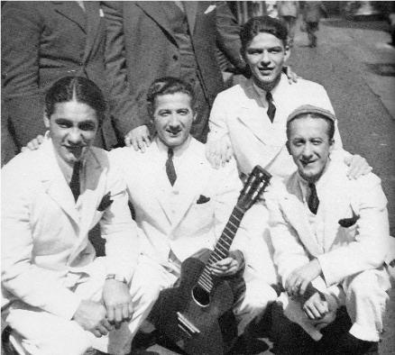
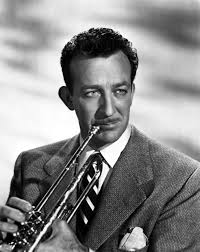
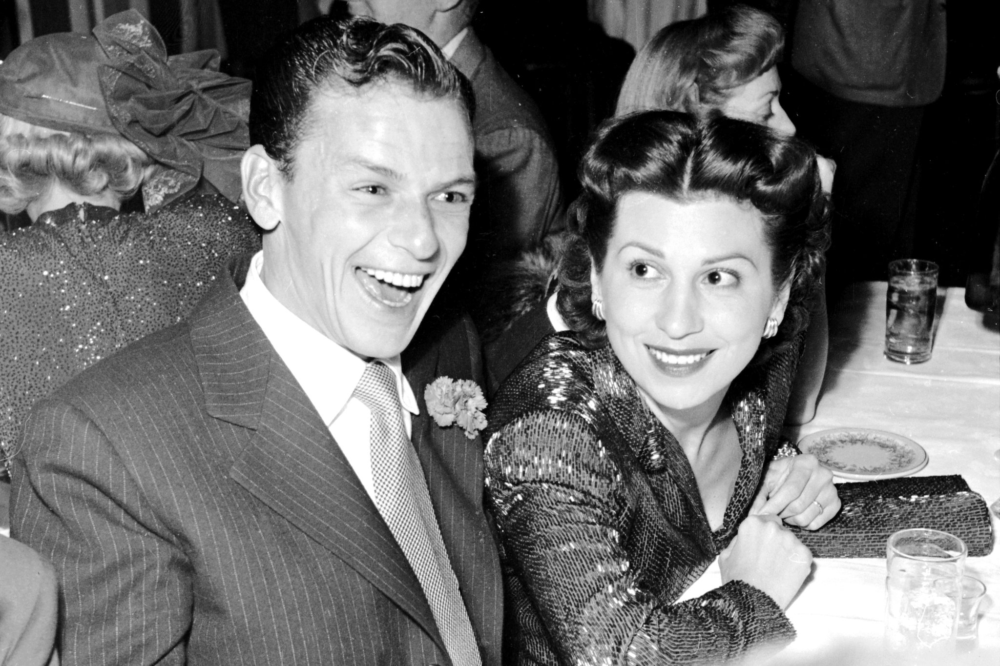
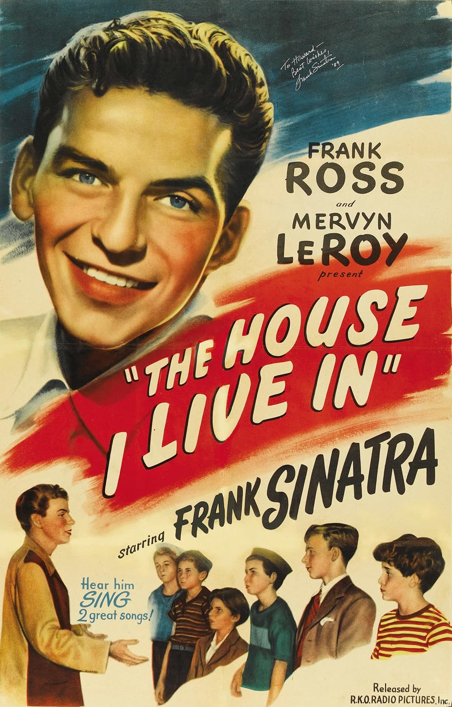
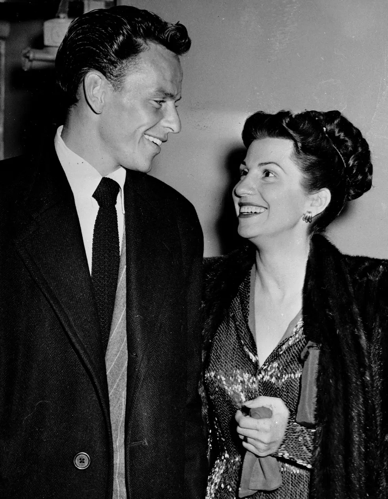
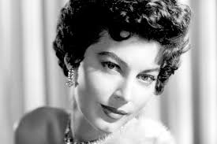
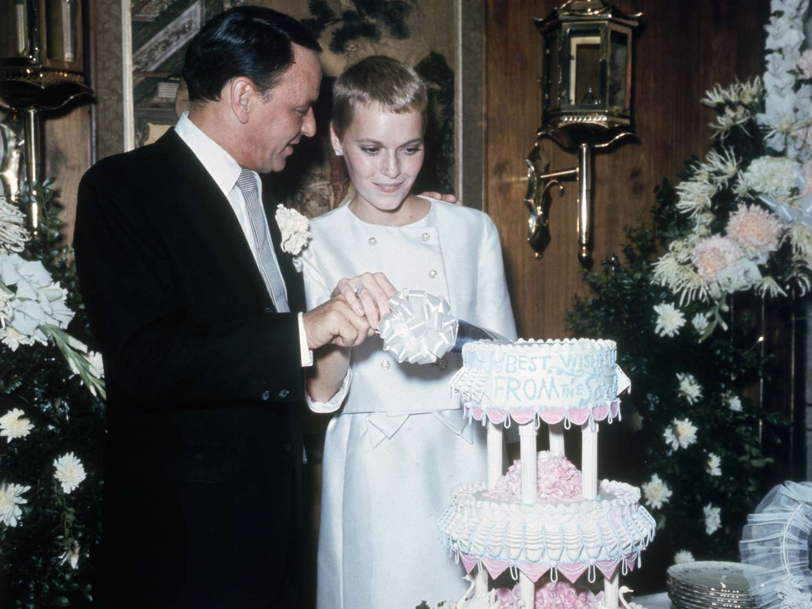
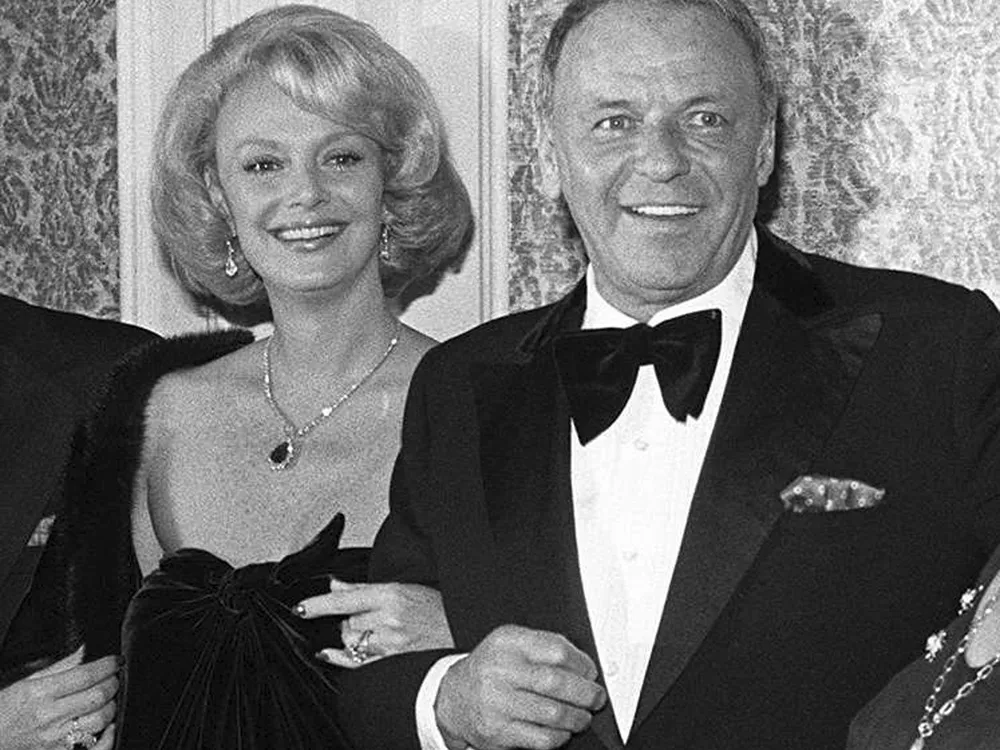
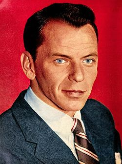

Francis Albert Sinatra, conhecido como Frank Sinatra, foi um cantor,ator e produtor estadunidense, considerado um dos melhores
artistas de todos os tempos. Foi um dos músicos recordistas e vendas, com mais de 150 milhões de cópias mundialmente.

12 de Dezembro de 1915
Frank Sinatra quase morreu no dia em que nasceu. O médico teve dificuldades para retirar o enorme bebê de 6,1 kg de sua pequena mãe.

8 DE SETEMBRO DE 1935
A grande oportunidade de Frank Sinatra surgiu quando ele e um trio local, que se autodenominava Three Flashes, fizeram testes separadamente para uma participação no programa Major Bowes and His Original Amateur Hour . Eles juntos formaram Hoboken Four.

13 DE JULHO DE 1939
Frank Sinatra gravou seu primeiro disco com Harry James (trompetista), “From The Bottom of My Heart” (com “Melancholy Mood” no lado B), pelo selo Brunswick.

1939
Frank se casou com Nancy Barbato com quem teve três filhos

1946
O filme "The House I Live In", estrelado por FS, ganha o Prêmio Honorário da Academia no Oscar.

1951
O cantor se divorciou de Nancy

25 DE MARÇO DE 1954
Ganha o Oscar de Melhor Ator Coadjuvante por “A Um Passo da Eternidade”

1953
O cantor se casou com Ava Gardner. Eles se divorciaram em 1957.

1966
Sinatra entra no seu terceiro casamento, dessa vez com a jovem atriz Mia Farrow. O divorcio ocorreu em 1968.

30 DE DEZEMBRO DE 1968
Gravando “My Way”

1976
Seu quarto e ultimo casamento, ele se casou com Barbara Marx e eles permaneceram juntos até o falecimento do cantor.

FEVEREIRO DE 1994
Os duetos alcançaram o status de multiplatina

1998
Frank Sinatra veio a óbito